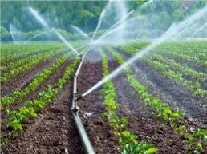

lands and irrigation
Surface irrigation or flood irrigation is a set of techniques for applying and
distributing irrigation water over the soil surface by gravity.
The rate of surface irrigation in Egypt currently reaches
about 90% of the irrigated lands in Egypt,
and the efficiency of irrigation in this way is low.
The surface irrigation system is usually used on the old cultivated land,
which has a total area of about 2.73 million hectares (6.5 million acres).
Basin, slide and line irrigation is the main method of surface irrigation in Egypt.
Surface irrigation methods are ineffective,
which can be due to many physical obstacles (for example: steep land slope,
shallow soil, poor water supply, etc.), through poor design and planning,
or as a result of poor irrigation management.
Water consumption for this type of irrigation represents
about 61% of the total water resources.
Therefore, optimizing this system saves large amounts of irrigation water,
which can then be used for horizontal expansion.
This irrigation depends on the modern technological methods currently used.

Next